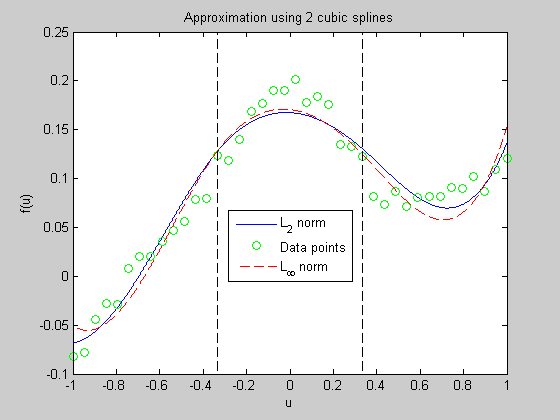

Spline fitting
n=4;
m=40;
randn('state',0);
u = linspace(-1,1,m);
v = 1./(5+40*u.^2) + 0.1*u.^3 + 0.01*randn(1,m);
a = -1/3; b = 1/3;
u1 = u(find(u<a)); m1 = length(u1);
u2 = u(find((u >= a) & (u<b))); m2 = length(u2);
u3 = u(find((u >= b))); m3 = length(u3);
A1 = vander(u1'); A1 = fliplr(A1(:,m1-n+[1:n]));
A2 = vander(u2'); A2 = fliplr(A2(:,m2-n+[1:n]));
A3 = vander(u3'); A3 = fliplr(A3(:,m3-n+[1:n]));
fprintf(1,'Computing splines in the case of L2-norm...');
cvx_begin
variables x1(n) x2(n) x3(n)
minimize ( norm( [A1*x1;A2*x2;A3*x3] - v') )
[1 a a^2 a^3]*x1 == [1 a a^2 a^3]*x2
[0 1 2*a 3*a^2]*x1 == [0 1 2*a 3*a^2]*x2
[0 0 2 6*a ]*x1 == [0 0 2 6*a ]*x2
[1 b b^2 b^3]*x2 == [1 b b^2 b^3]*x3
[0 1 2*b 3*b^2]*x2 == [0 1 2*b 3*b^2]*x3
[0 0 2 6*b ]*x2 == [0 0 2 6*b ]*x3
cvx_end
fprintf(1,'Done! \n');
fprintf(1,'Computing splines in the case of Linfty-norm...');
cvx_begin
variables xl1(n) xl2(n) xl3(n)
minimize ( norm( [A1*xl1;A2*xl2;A3*xl3] - v', inf) )
[1 a a^2 a^3]*xl1 == [1 a a^2 a^3]*xl2
[0 1 2*a 3*a^2]*xl1 == [0 1 2*a 3*a^2]*xl2
[0 0 2 6*a ]*xl1 == [0 0 2 6*a ]*xl2
[1 b b^2 b^3]*xl2 == [1 b b^2 b^3]*xl3
[0 1 2*b 3*b^2]*xl2 == [0 1 2*b 3*b^2]*xl3
[0 0 2 6*b ]*xl2 == [0 0 2 6*b ]*xl3
cvx_end
fprintf(1,'Done! \n');
u1s = linspace(-1.0,a,1000)';
p1 = x1(1) + x1(2)*u1s + x1(3)*u1s.^2 + x1(4).*u1s.^3;
p1l1 = xl1(1) + xl1(2)*u1s + xl1(3)*u1s.^2 + xl1(4).*u1s.^3;
u2s = linspace(a,b,1000)';
p2 = x2(1) + x2(2)*u2s + x2(3)*u2s.^2 + x2(4).*u2s.^3;
p2l1 = xl2(1) + xl2(2)*u2s + xl2(3)*u2s.^2 + xl2(4).*u2s.^3;
u3s = linspace(b,1.0,1000)';
p3 = x3(1) + x3(2)*u3s + x3(3)*u3s.^2 + x3(4).*u3s.^3;
p3l1 = xl3(1) + xl3(2)*u3s + xl3(3)*u3s.^2 + xl3(4).*u3s.^3;
us = [u1s;u2s;u3s];
p = [p1;p2;p3];
pl = [p1l1;p2l1;p3l1];
d = plot(us,p,'b-',u,v,'go', us,pl,'r--',...
[-1 -1], [-0.1 0.25], 'k--', [1 1], [-0.1 0.25], 'k--', ...
[a a], [-0.1 0.25], 'k--', [b b], [-0.1 0.25], 'k--');
title('Approximation using 2 cubic splines');
xlabel('u');
ylabel('f(u)');
legend('L_2 norm','Data points','L_{\infty} norm', 'Location','Best');
Computing splines in the case of L2-norm...
Calling SeDuMi: 53 variables (12 free), 46 equality constraints
------------------------------------------------------------------------
SeDuMi 1.1 by AdvOL, 2005 and Jos F. Sturm, 1998, 2001-2003.
Alg = 2: xz-corrector, Adaptive Step-Differentiation, theta = 0.250, beta = 0.500
Split 12 free variables
eqs m = 46, order n = 27, dim = 66, blocks = 2
nnz(A) = 432 + 0, nnz(ADA) = 1954, nnz(L) = 1039
it : b*y gap delta rate t/tP* t/tD* feas cg cg prec
0 : 6.39E-001 0.000
1 : 7.27E-002 1.26E-001 0.000 0.1964 0.9000 0.9000 1.60 1 1 9.2E-001
2 : 1.35E-001 2.33E-002 0.000 0.1857 0.9000 0.9000 1.19 1 1 2.8E-001
3 : 1.18E-001 4.57E-003 0.000 0.1959 0.9000 0.9000 0.49 1 1 9.5E-002
4 : 1.17E-001 1.59E-004 0.000 0.0347 0.9900 0.9900 0.88 1 1 2.6E-003
5 : 1.17E-001 4.17E-006 0.195 0.0263 0.9900 0.9900 0.96 1 1 6.3E-005
6 : 1.17E-001 2.49E-007 0.000 0.0597 0.9900 0.8892 0.99 1 1 1.8E-006
7 : 1.17E-001 8.85E-010 0.332 0.0036 0.9990 0.9990 1.00 1 1 6.4E-009
iter seconds digits c*x b*y
7 0.1 Inf 1.1660336269e-001 1.1660336496e-001
|Ax-b| = 1.1e-009, [Ay-c]_+ = 2.6E-009, |x|= 6.7e+000, |y|= 1.2e+000
Detailed timing (sec)
Pre IPM Post
4.006E-002 1.402E-001 0.000E+000
Max-norms: ||b||=2.018994e-001, ||c|| = 1,
Cholesky |add|=0, |skip| = 0, ||L.L|| = 853.331.
------------------------------------------------------------------------
Optimal value (cvx_optval): +0.116603
Status (cvx_status): Solved
Done!
Computing splines in the case of Linfty-norm...
Calling SeDuMi: 92 variables (12 free), 85 equality constraints
------------------------------------------------------------------------
SeDuMi 1.1 by AdvOL, 2005 and Jos F. Sturm, 1998, 2001-2003.
Alg = 2: xz-corrector, Adaptive Step-Differentiation, theta = 0.250, beta = 0.500
Split 12 free variables
eqs m = 85, order n = 105, dim = 105, blocks = 1
nnz(A) = 628 + 0, nnz(ADA) = 2565, nnz(L) = 1754
it : b*y gap delta rate t/tP* t/tD* feas cg cg prec
0 : 2.02E-001 0.000
1 : 3.75E-002 1.04E-001 0.000 0.5166 0.9000 0.9000 2.79 1 1 9.7E-001
2 : 4.39E-002 5.98E-002 0.000 0.5723 0.9000 0.9000 10.04 1 1 9.4E-002
3 : 3.72E-002 3.08E-002 0.000 0.5149 0.9000 0.9000 2.05 1 1 4.3E-002
4 : 4.13E-002 1.54E-002 0.000 0.4987 0.9000 0.9000 1.23 1 1 2.4E-002
5 : 3.96E-002 8.87E-003 0.000 0.5777 0.9000 0.9000 0.97 1 1 1.7E-002
6 : 3.41E-002 2.74E-003 0.000 0.3084 0.9172 0.9000 0.59 1 1 1.0E-002
7 : 3.21E-002 1.23E-003 0.000 0.4483 0.9089 0.9000 0.61 1 1 6.1E-003
8 : 3.22E-002 5.36E-004 0.000 0.4374 0.9052 0.9000 0.87 1 1 3.2E-003
9 : 3.21E-002 8.44E-005 0.000 0.1573 0.9104 0.9000 0.95 1 1 6.0E-004
10 : 3.20E-002 1.49E-007 0.000 0.0018 0.9990 0.9990 0.99 1 1
iter seconds digits c*x b*y
10 0.1 15.2 3.2038334523e-002 3.2038334523e-002
|Ax-b| = 6.7e-016, [Ay-c]_+ = 6.0E-017, |x|= 2.5e+000, |y|= 6.8e-001
Detailed timing (sec)
Pre IPM Post
3.004E-002 1.302E-001 1.001E-002
Max-norms: ||b||=2.018994e-001, ||c|| = 1,
Cholesky |add|=0, |skip| = 0, ||L.L|| = 10.0407.
------------------------------------------------------------------------
Optimal value (cvx_optval): +0.0320383
Status (cvx_status): Solved
Done!
